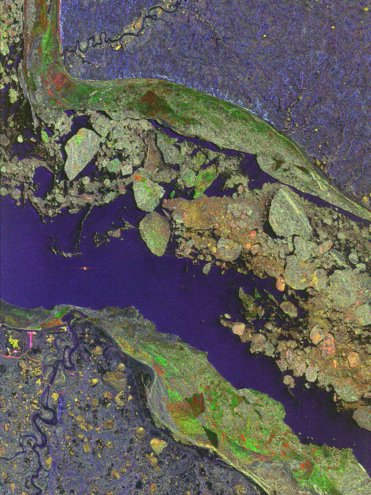
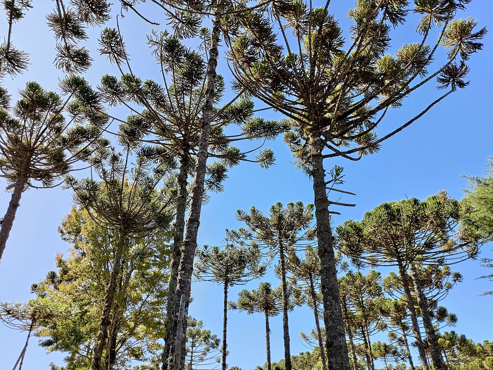
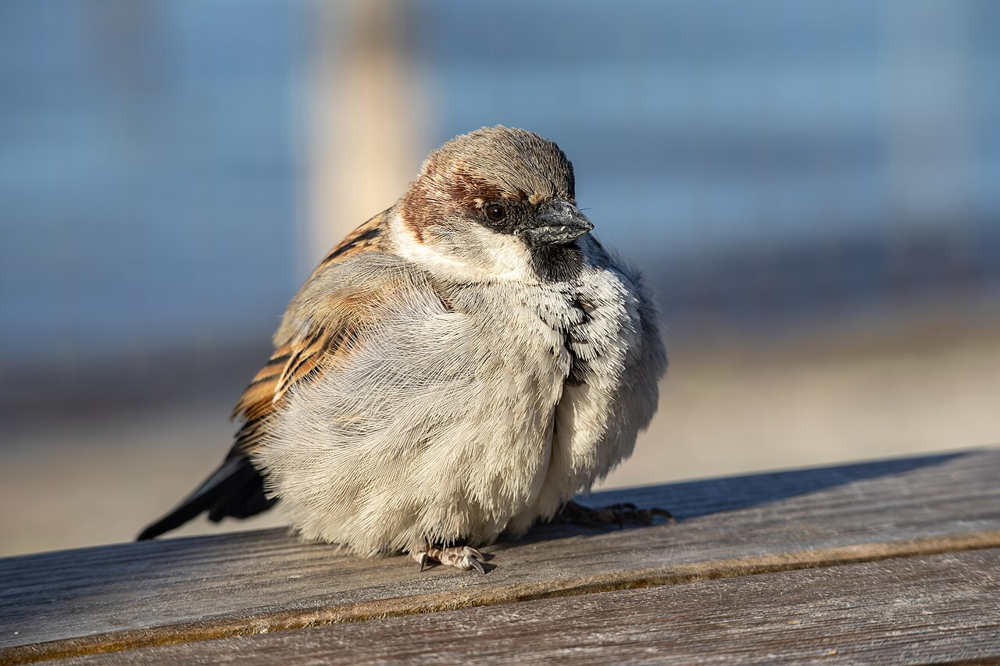

Lula.
diario de la mañana — el mundo, tu ciudad y lo que te asombra
Buen día, sábado fresco: de 12° a 18°, con viento del sur y, según la fuente, una llovizna floja temprano. Sacá una campera. El Papa está en Uruguay y llega mañana a Buenos Aires. Y hoy el ballet es el más violento del repertorio: La consagración de la primavera, que en 1913 terminó a los gritos y a las piñas en la platea.
- La semana que se va2'
- Ciencia: verde y más frágil5'
- Mirá a tu alrededor2'
- La palabra del día1'
- Le français du matin2'
- Sábado de ballet: La consagración4'
- Lo que me asombra hoy2'
- Pasatiempo: sudoku difícil20'
- Cuaderno: repaso y quiz3'
El Papa aterrizó en Montevideo y mañana cruza el río
León XIV llegó ayer a las cuatro y media de la tarde a Carrasco, se reunió con las autoridades y con el presidente Yamandú Orsi, y abrió su primer viaje a Sudamérica con una frase de evangelio: «les anuncio una gran alegría». Hoy tiene misa en Paysandú, un encuentro con el mundo educativo en la Universidad Católica y una vigilia en el Estadio Centenario. Mañana domingo cruza a Buenos Aires, donde se queda hasta el miércoles 11 antes de seguir a Perú.
Lo demás de la semana, en dos líneas: los demócratas dieron vuelta las dos cámaras en Estados Unidos, y eso, leído desde acá, le puso un techo al respaldo financiero del Tesoro estadounidense: el riesgo país argentino pasó de 787 el lunes a 925 el jueves, su peor valor en un año, con el dólar minorista clavado en $1.570. En ciencia fue una semana grande: el lince de Doñana cazando milanos, y la cerradura por la que entra el virus de la rubéola.
El norte está cada vez más verde y cada vez menos resistente
De qué estamos hablando: desde hace décadas los satélites muestran que la tundra y el bosque boreal reverdecen: con el calentamiento hay más biomasa vegetal donde antes había poca. Eso se leyó mucho tiempo como una buena noticia. Este trabajo de Nature Plants dice que la métrica engaña: el verde aumenta y, al mismo tiempo, la capacidad de esos ecosistemas de recuperarse de una perturbación viene cayendo desde alrededor de 2008.

Quién es quién
- Resiliencia, acá, tiene una definición operativa y medible: la velocidad con la que un sistema vuelve a su estado normal después de una perturbación. Nada que ver con el uso motivacional de la palabra.
- Cómo se mide desde un satélite: con la autocorrelación temporal de un índice de vegetación (acá, kNDVI). Si el valor de este mes se parece mucho al del mes pasado, el sistema «arrastra» su estado: tarda en volver. Autocorrelación alta y creciente es la señal clásica de pérdida de resiliencia, y es la misma herramienta que se usa para detectar puntos de inflexión antes de que ocurran.
- VPD (déficit de presión de vapor): cuánta más agua podría contener el aire antes de saturarse. Es «sed atmosférica»: con VPD alto, la planta pierde agua por los estomas aunque el suelo no esté seco, y termina cerrándolos y dejando de fijar carbono.
Qué encontraron
- Un punto de giro alrededor de 2008. Con datos satelitales de 2000 a 2023, la resiliencia de la vegetación sobre permafrost viene cayendo desde entonces, de manera generalizada, mientras el reverdecimiento continúa.
- El mejor predictor es el VPD, no la temperatura ni la lluvia: lo que más explica la caída es la sequedad del aire.
- La captura de carbono se volvió más inestable año a año. Para los modelos climáticos eso importa: un sumidero que absorbe parecido pero con mucha más varianza es un sumidero menos confiable.
- Y el detalle incómodo: la mayoría de los modelos de vegetación no reproducen esta reversión. Es decir, el fenómeno está en los datos y no en las simulaciones con las que se proyecta el futuro.
Lectura crítica y la conexión con lo que estudiás
- La autocorrelación es un indicador indirecto. Puede subir por razones que no son pérdida de resiliencia —cambios en el sensor, en la cobertura de nieve, en la frecuencia de datos—, y los autores tienen que descartarlas. Es el punto que yo miraría primero en el paper.
- Veintitrés años es poco para un ecosistema cuyos ciclos naturales pueden durar décadas.
- Lo transferible: que un sistema se vea mejor por una métrica y esté peor por otra pasa todo el tiempo, también en el laboratorio. Un cultivo celular puede crecer bien y estar perdiendo capacidad de respuesta; un paciente puede tener el número normal y la reserva agotada. Medir el estado no es lo mismo que medir la capacidad de volver, y casi siempre medimos lo primero porque es más fácil.
«Widespread reversal of vegetation resilience in permafrost ecosystems». Guo, Wang y Gong, Nature Plants, 3 de noviembre de 2026, doi:10.1038/s41477-026-02462-x
La araucaria, que es más vieja que las flores, y el gorrión



_version_2,_Geneve,_Switzerland.jpg){kind=link}
El árbol: araucaria
| Nombre científico | Araucaria angustifolia, el pino Paraná, que en la Argentina es nativo de Misiones; y A. araucana, el pehuén de Neuquén. En Buenos Aires hay ejemplares plantados en plazas y en el Botánico. |
|---|---|
| Cómo reconocerla | La silueta: tronco recto y ramas en pisos horizontales, como un candelabro, con la copa achatada arriba. Las hojas son escamas duras y punzantes, no agujas blandas. |
| Lo asombroso | Es una gimnosperma: no tiene flores ni frutos, sino conos, y es anterior a la aparición de las plantas con flor. Las araucarias ya estaban en el Jurásico, y los piñones del pehuén —ricos en almidón— fueron durante siglos la base alimentaria del pueblo pehuenche, que lleva su nombre por el árbol. Las dos especies están hoy en peligro: la de Misiones perdió más del 95 % de su bosque original. |
El ave: gorrión
| Nombre científico | Passer domesticus (Passéridos). El macho tiene babero negro y capucha gris; la hembra es parda y discreta. |
|---|---|
| Cómo reconocerlo | Es el pájaro que ya no mirás. Vive donde vivimos nosotros, come lo que tiramos y anida en cualquier hueco de un edificio. |
| Lo asombroso | No es de acá. Llegó por una decisión: alrededor de 1872 se soltaron gorriones traídos de Europa en Buenos Aires, con la idea de que controlaran insectos y, de paso, de que el paisaje sonara «europeo». Desde esos pocos individuos colonizó el continente entero. Y el final de la historia es irónico: en buena parte de Europa el gorrión está en fuerte declive —menos huecos en los edificios modernos, menos insectos para los pichones—, mientras acá sigue en todas las veredas. La misma especie, invasora de un lado y amenazada del otro. |
primavera sustantivo
latín prima (primera) + ver, veris (la estación cálida) → prima vera → castellano primavera · catalán primavera · italiano primavera (el francés y el inglés usan otra raíz: printemps, spring)
En latín, ver era directamente «la primavera», y la expresión prima vera quería decir «el comienzo de la estación buena». De la misma raíz vienen veraniego y el verano, que en castellano antiguo nombraba el final de la primavera y recién después se corrió al verano actual. El francés armó la palabra de otra manera —printemps, de primum tempus, «el primer tiempo»— y el inglés eligió una imagen: spring, el brote que salta.
Me gusta que las tres lenguas hayan elegido la misma idea con palabras distintas: lo primero. No la estación más linda ni la más fértil, sino la que empieza. Para la agricultura europea, el año arrancaba ahí, y esa es también la lógica del calendario romano arcaico en el que octubre era el mes octavo. Es la misma intuición que tiene el título del ballet de hoy, que de primaveral no tiene nada.
Chez le médecin
— Qu'est-ce qui ne va pas ?
— J'ai mal à la gorge et je tousse depuis trois jours.
— Vous avez de la fièvre ? Je vous ausculte.
— Ce n'est pas grave ?
— Non, du repos et beaucoup d'eau.
Las diez de la semana
- ça ne va pas ? · ¿no andás bien? — j'ai mal à la tête · me duele la cabeza
- le ventre · la panza — la gorge · la garganta
- de la fièvre · fiebre — je tousse · toso
- depuis trois jours · desde hace tres días — un sirop · un jarabe
- trois fois par jour · tres veces por día — du repos · reposo
La consagración de la primavera: el estreno que terminó a los gritos
29 de mayo de 1913, Teatro de los Campos Elíseos, París. Música de Igor Stravinsky, coreografía de Vaslav Nijinsky, para los Ballets Rusos de Diaghilev. La historia es un rito pagano: una tribu elige a una joven y la hace bailar hasta morir para que vuelva la primavera. El público empezó a silbar en los primeros minutos, hubo insultos, trompadas y gente desalojada; los bailarines no escuchaban la orquesta y Nijinsky tuvo que gritarles los tiempos entre bambalinas. Es el escándalo más famoso de la historia del arte del siglo XX.
Qué escuchar y qué mirar
- Por qué la música sonaba imposible: Stravinsky rompió con la regularidad del compás. Hay pasajes que cambian de métrica casi en cada barra, y acordes que superponen dos tonalidades a la vez —el famoso acorde de los «Augurios primaverales» es un mi mayor encima de un mi bemol séptima—. El efecto es un pulso que golpea sin avisar dónde cae el acento.
- Por qué el baile era un insulto: Nijinsky les pidió a los bailarines exactamente lo contrario de todo lo que habían aprendido. Pies hacia adentro en vez de en dehors, rodillas dobladas, cuerpos pesados, movimientos de a bloques. Para 1913 eso no era «otra estética»: era destruir el ballet en público.
- La versión de hoy, la de Pina Bausch (1975), es la que más se repone en el mundo y se baila sobre un piso cubierto de turba: tierra de verdad, varias toneladas. A los diez minutos los cuerpos están embarrados y el vestido rojo de la elegida es lo único que se distingue. El cansancio no se actúa.
- Mirá el grupo, no a la solista. En Bausch, la masa se mueve como un animal y la víctima se elige casi por azar, pasándose un trapo rojo de mano en mano. Lo aterrador es cuánto se parece a cosas que uno vio.
Hay una paradoja hermosa: la obra que el público no soportó en 1913 es hoy una de las piezas más programadas del repertorio, y su partitura se estudia como el nacimiento de la música del siglo XX.
El permafrost guarda ADN de hace dos millones de años
El suelo congelado del que habla la ciencia de hoy tiene otra propiedad asombrosa: es un archivo. En 2022 un equipo publicó en Nature el ADN más antiguo recuperado hasta ahora, de sedimentos de la formación Kap København, en el extremo norte de Groenlandia: unos dos millones de años. No había fósiles ni huesos. Había fragmentos de ADN de entre treinta y cien pares de bases pegados a partículas minerales de arcilla y cuarzo, que es justamente lo que los protegió de degradarse.
Con eso reconstruyeron un ecosistema completo que ya no existe: un bosque abierto con álamos, abedules y tuyas conviviendo con renos, liebres, lemmings, gansos… y mastodontes, que nadie esperaba tan al norte. Hoy ese lugar es desierto polar. Entonces tenía entre 11 y 19 °C más que ahora, y era un mundo sin análogo moderno: una mezcla de especies boreales y árticas que no se da en ninguna parte del planeta actual.
Lo que me gusta de este dato es lo que implica para la ciencia de hoy. El permafrost no solo almacena carbono: almacena información. Cada metro de suelo congelado es una biblioteca de secuencias y, mientras se descongela, se va borrando sola. Estamos perdiendo, al mismo tiempo, un sumidero de carbono y el único registro genético directo de cómo era el mundo la última vez que hizo este calor.
El del sábado
Repaso y quiz
Repaso de idiomas
Quiz
En el trabajo de hoy, «resiliencia» se midió como…
¿Cuál fue el mejor predictor de la caída?
La araucaria es una gimnosperma, o sea que…
El gorrión llegó a la Argentina…
En 1913, lo que más escandalizó del baile de Nijinsky fue…
El ADN más antiguo recuperado hasta ahora tiene…
Escritura
- Quiz: autocorrelación temporal · el déficit de presión de vapor · tiene conos, no flores · soltado a propósito en 1872 · pies hacia adentro y rodillas dobladas · dos millones de años, en Groenlandia.
- Repaso: j'ai mal à la gorge · je tousse depuis trois jours · vous avez quelque chose pour la toux ? · trois fois par jour.
Sudoku:
Fuentes de esta edición
- Mundo: Vatican News: la llegada a Montevideo · La Nación: el cronograma
- Clima: La Nación, con datos del SMN · Minuto Uno
- Ciencia: Nature Plants: reversión de la resiliencia en ecosistemas de permafrost · la nota de prensa
- Ballet: Ópera de París: Le Sacre du printemps de Pina Bausch · Ficha de la obra
- Asombro: Nature (2022): ADN ambiental de dos millones de años en Kap København
Mañana, domingo: llega el Papa y va domingo lento. — Lula.